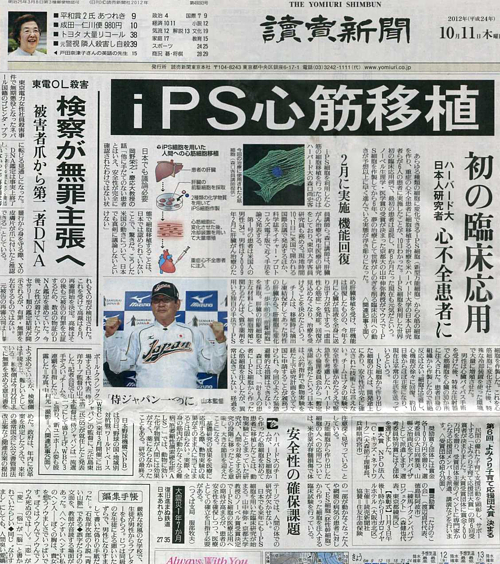

ウソでもホント
公開日：

日経新聞の記事。
「ｉＰＳ細胞から心筋を作り、患者に移植した」とする森口尚史氏の主張に疑義が相次いでいる問題で、11日付朝刊で「移植」と最初に報じた読売新聞は13日付朝刊で「森口氏の主張に基づいた一連の記事は誤報と判断した」と説明し、「おわび」と検証記事を掲載した。
一方、読売新聞の記事。
また、日本経済新聞は０２年以降、森口氏の研究に基づく記事を８本掲載。このうち、０９年７月～１０年２月の計３本の記事では、森口氏の肩書を「米ハーバード大の研究員」としていた。
日本経済新聞社が発行する日経産業新聞も４本を掲載。１０年６月には、「米ハーバード大の研究員」の森口氏と東京医科歯科大のグループの研究成果として、「ハーバード大研究員ら Ｃ型肝炎治療 副作用少なく ｉＰＳ細胞活用」と題した記事を掲載。この研究については、東京医科歯科大が１２日、「東京医科歯科大で実験や研究が行われた事実はない」としている。同年４月には、人物紹介のコーナーで、「ハーバード大研究員」として、森口氏を取り上げた。ｉＰＳ細胞の研究でがん治療法の開発に取り組んでいる、と紹介している。
http://www.yomiuri.co.jp/national/news/20121013-OYT1T01325.htm
上げ足の取り合いみたいで面白い。まぁ、日経新聞も 本社も2年前に森口氏の記事掲載 事実関係調査 :日本経済新聞 という記事も出しているのだけど、どうせしばらく経ったらウェブからは消しちゃうんだよね。そう思うと、またおんなじことやるんだろうなぁ、と情けない気持ちになる。韓国の某教授による論文詐欺だって、そう大して昔の話ではないのに何の反省もなかったのか。
誰しも間違いはあるし、実際僕だって間違いを書くのは怖い。“お詫びと訂正”を書くのは嫌だし、たまに夢にみて夜中起きたりもする。だから、ほとんど中毒みたいに関連記事に目を通したり、知識のある人をできるだけフォローしたりするわけで。
でも、それがたまに罠だったりするんだろうな。残念、その記事・知識はウソでした！ まぁ、さすがに自分で手を動かして得たプログラミングの知識だけはウソではなかろうが……それでも勘違いというのはありうる。
みんな、マスコミの書くことは信じてしまう。だから、マスコミが信じてしまったものは、ウソでもホントになってしまう。ウソがホントになれば、その“差額”はまるまる詐欺師のポッケの中へ入るというわけだ。でも、疑ってばかりいてはキリがない！ 時間は限られている。どうすればいいんだろうね。
ヨミドクターに掲載されたｉＰＳ心筋移植に関連する記事に誤りがありました。おわびします。